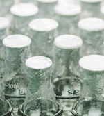
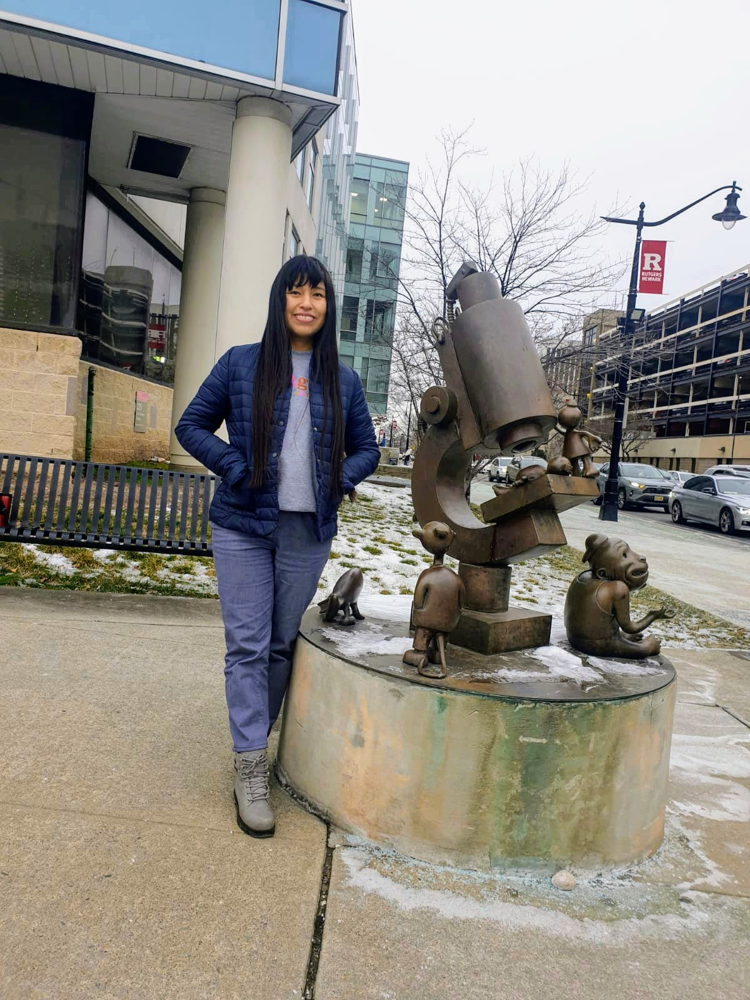

People
Meet the Labbies and Crabbies
Principal Investigator
Prof. Colin Kinz-Thompson


Research Scientists
Dr. Natalia Nemeria
Research Associate
Graduate Students
Katherine Leon Hernandez
SREB Doctoral Scholar, NIH MBRS Scholar, NSF GS-LSAMP B2D Scholar
Andres Cifuentes
Tianyue Dai

Christa Murphy
Zhutao Sheng
Vaishnavi Shesham
Undergraduate Researchers
Karl Gaiser
Katrina Mejia
NSF GS-LSAMP Scholar

Jordania (Jordi) Urquizo
McNair Scholar

Brigitte Valladares
NSF GS-LSAMP B2B Scholar
Past Members
Graduate Students
- Yuntao Qiu, Spring 2021 - Summer 2022, yq123@scarletmail.rutgers.edu
Undergraduate Students
Kaiyang Zhu, Summer 2023, kaiyang.zhu@emory.edu
Wesley Chan, Spring 2022 - Summer 2022, wc518@scarletmail.rutgers.edu
High School Students
- Sasche Joseph, Summer 2022, ACS Project SEED Student
Pets

Onyx
Lab(rador retriever)
Cilantra
Cat(ion exchange chromatography resin)